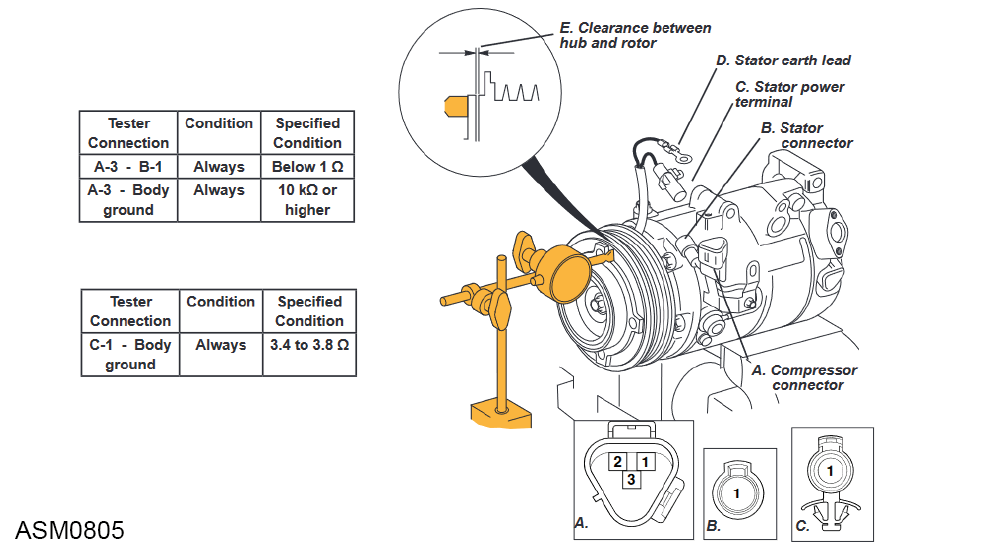

Clutch Assembly - AC Compressor - V6
Print
Operation Code: 40.23.03-02
Removal
- Remove AC compressor. Refer to procedure.
Installation
- Install circlip to stator.
- Install circlip to pulley.
- Install clutch shims.
NOTE: Use at least the same amount of clutch shims as removed.
- Check clutch clearance.
NOTE: Add clutch shims as required if there is no clearance.
- Connect AC compressor to suitable 12V power source.
- Use Dial Test Indicator (DTI) to measure distance between hub and rotor while operating AC clutch.
NOTE: Distance should be between 0.26mm and 0.6mm between the clutch hub and the pulley.
NOTE: Add shims if outside of clearance.

- If AC compressor clutch fails to operate, check resistance at following terminals:
NOTE: If resistance is not as specified, on connectors replace the AC compressor and clutch assembly.
NOTE: If resistance is not as specified at ground connector, replace AC clutch.